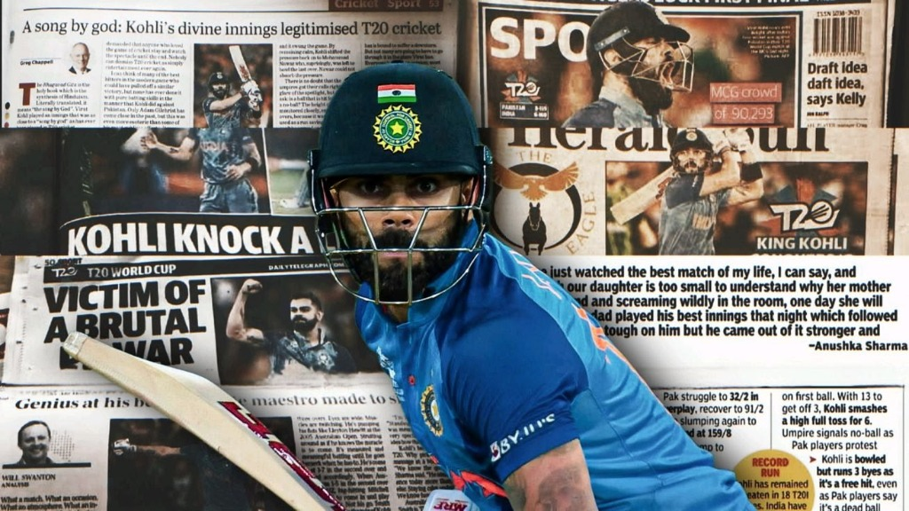
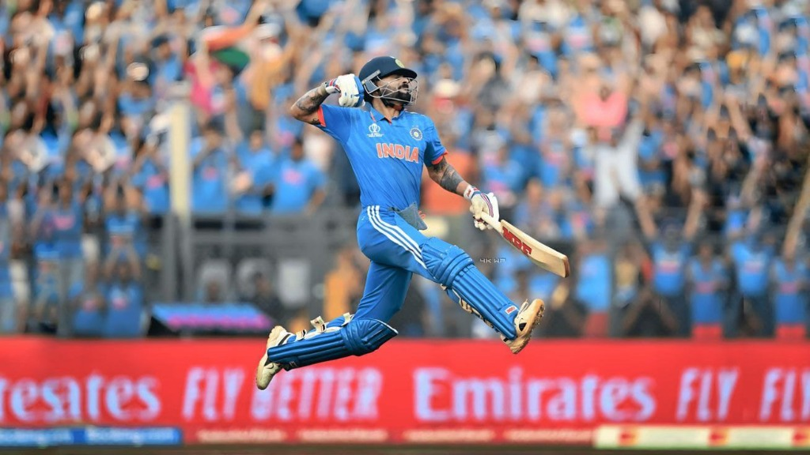
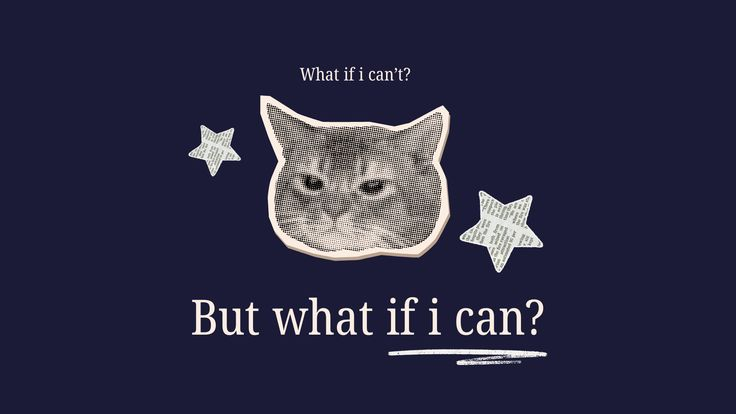
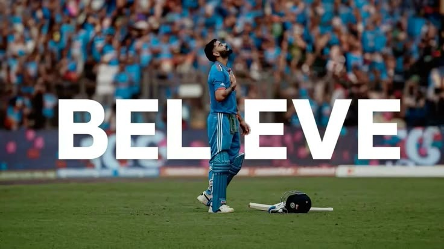
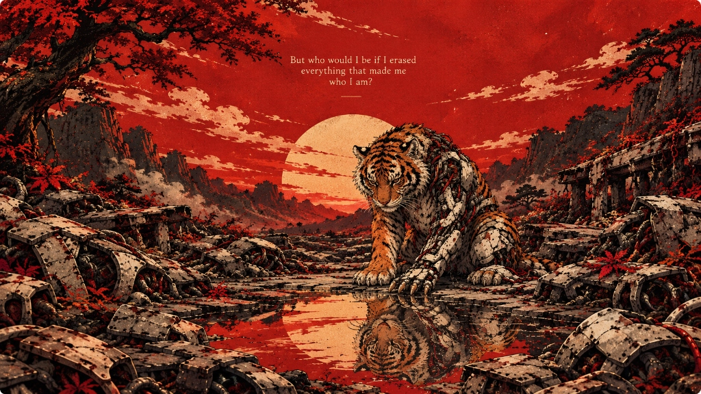
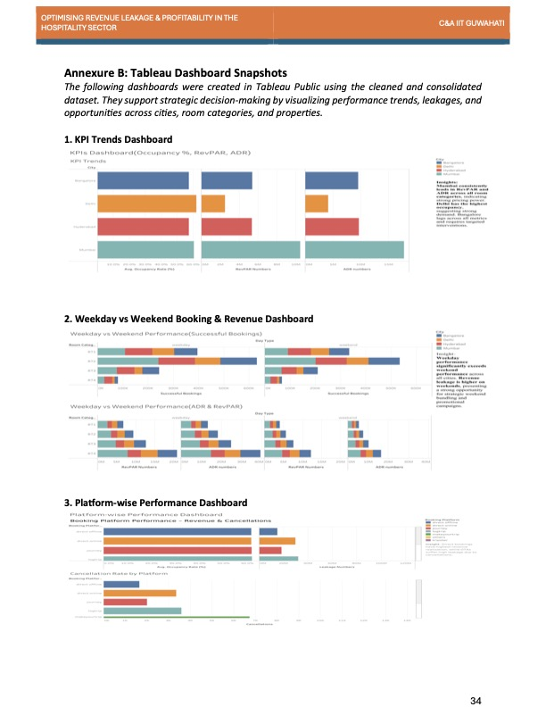
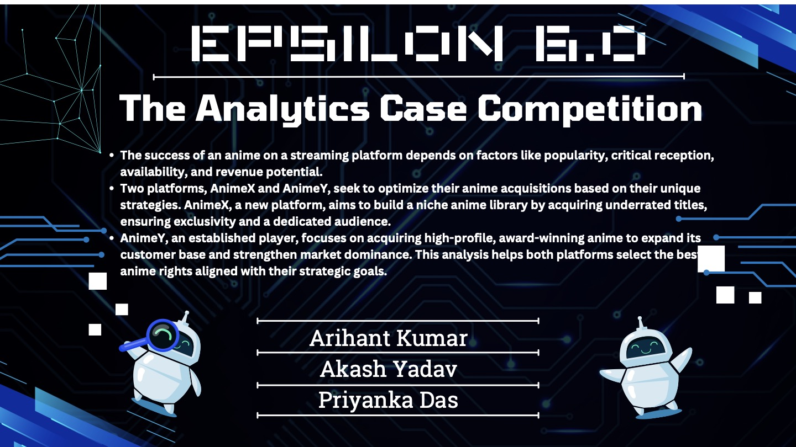
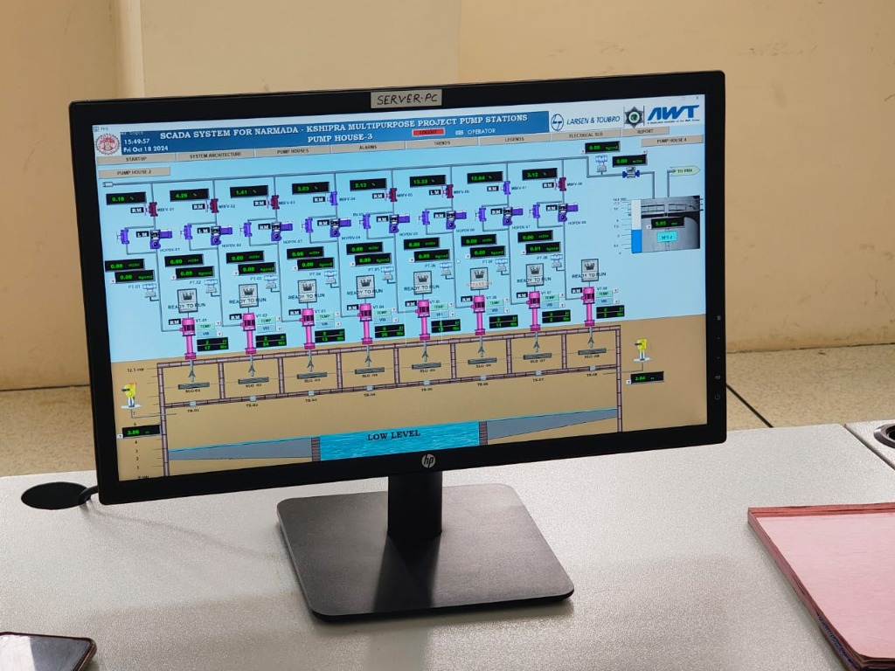
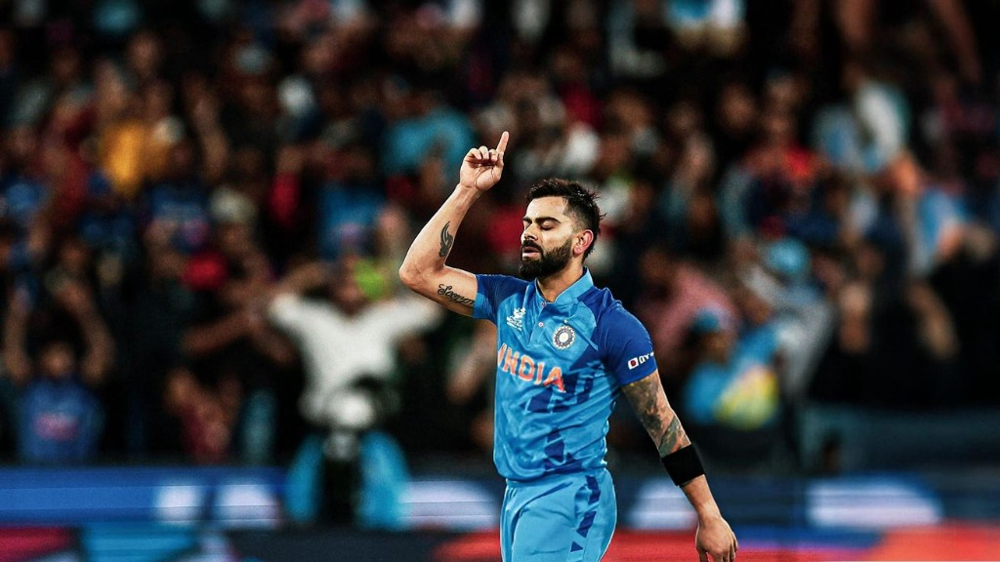
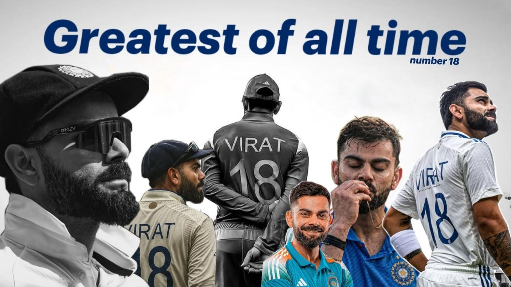

Defined MVP scope, user acceptance criteria, and failure guardrails for Post Snap and OCR Studio.
Akash Yadav's
I find the problem, make the call, and ship it.
Problems · Decisions · People · Impact
Reliable, zero-install OCR for Indian scripts running entirely in the browser.
Paste an X post link, get a clean PNG. If it is a recreation, it says so honestly.
Full post content rendered without screenshot clutter or mobile UI bars...
“My story won’t end at ‘he had potential,’ or ‘he had a bright future,’ or ‘he was destined for greatness.’ I’ll go ahead and actually become all of that. I’ll live out my potential and reach the highest level I possibly can.”
— Akash Yadav · By me, for me.


02 · Editor's Letter & Dossier
A Note Before You Read
Curiosity beyond the résumé, core mission, and current conditions report.
Read → Letter
03 · Build Desk (Shipped Products)
OCR Studio & Post Snap
Two live products: on-device privacy OCR & honest X screenshot converter.
Read → Case Studies 01 & 02
04 · Leadership Notes
Fixing a Broken Recruiter Pipeline
T&P Cell Secretary: 13 of 25+ revived recruiters, 60+ team, 1,200+ students served.
Read → Leadership
05 · Analysis Desk
Hospitality & Epsilon 6.0
10,000+ bookings (₹10.88 L / 62.3% ROI) and OTT budget war-games.
Read → Case Studies 03 & 04
06 · Field Notes
Inside a ₹65,000 Cr Water Project
Summer 2025 at Larsen & Toubro: SCADA telemetry, hydraulic nodes & scale.
Read → Field Notes
07 · The Toolkit
Product, Data & Credentials
PRD writing, user research, SQL, Tableau, Figma, BIET Jhansi, IIT Guwahati.
Read → Toolkit
08 · Off the Clock
Cricket, Kohli & Love for the Game
When the laptop closes: passion, high standards and never settling.
Read → Off Clock
09 · Connect
Got a Problem Worth Solving?
Open for APM/PM internships & collaborative builds. Let's talk.
Read → Connect
Akash Yadav's Journal · Volume I · Work in Progress. Always.
I've always been drawn to what happens before a decision is made — how a problem is understood, what evidence matters, and why one path is chosen over another. That thread connects civil engineering, large-scale telemetry at L&T, leading placement operations at BIET Jhansi, and building live software.
That curiosity now lives outside a résumé. I build products for problems I see clearly, with decisions I have to defend. Welcome to Volume I.



I'm Akash Yadav, a B.Tech Civil Engineering student at BIET Jhansi. My academic training began with engineering — structures, systems and the logic behind how things are built — but over time, I found myself becoming increasingly interested in a different layer of problems: the decisions behind them.
Why is one solution chosen over another? What does the user actually need? How do you make a trade-off when constraints hit? Those questions turned my focus toward Product Management.
Intelligence Dossier
Current Conditions Report
A zero-install OCR platform for Indian scripts running entirely in the browser. Zero documents leave the device.
Most OCR tools fail on complex Indian conjuncts or require uploading confidential legal documents to third-party servers. OCR Studio eliminates both trade-offs through client-side WebAssembly recognition and a transparent diff-review engine.
Paste a post link, get a high-resolution PNG. If a post must be reconstructed, transparency is baked in with explicit disclosure.
Manual screenshots bring interface noise and clipped threads. Built PRD-first with strict acceptance criteria, Post Snap captures official renders first and labels recreations clearly so viewers are never misled.
Secretary · Training & Placement Cell · BIET Jhansi
13 of 25+ recruiters who had paused hiring came back.
Recruiter Retention Turnaround
More than 25 recruiters who used to hire from BIET had stopped. When I asked why, the reasons were poor past experiences and follow-ups that came too late. The issue was not that recruiters did not want our students. We had made working with us frustrating.
What I Changed: I redesigned outreach across 1,000+ recruiters: segmenting them by sector, giving each coordinator clear ownership, and tracking follow-ups on a schedule so nobody waited on us.
The Pool Campus Drive: BIET's first Pool Campus Drive brought four colleges and recruiters together and led to 59 selections, 28 of them from BIET. It was formulated to aggregate regional talent pool density and attract Tier-1 recruiters who previously bypassed individual regional colleges.
Hospitality Sector · Revenue Optimization
Optimizing revenue leakage across 10,000+ bookings in 4 metro markets.
I analysed 10,000+ bookings across Delhi, Mumbai, Hyderabad and Bangalore to find where hotels were losing revenue: through pricing gaps, cancellations and underused capacity. Finding the pattern was half the work. The other half was deciding what to do about it, so I built segment-specific pricing and bundling recommendations and modelled the scenarios, projecting ₹10.88 L of additional revenue at 62.3% ROI.

Epsilon 6.0 · SSCBS, University of Delhi
National Top 20 finish among 250+ teams at India's premier strategy competition.
We had to decide how two streaming platforms should spend fixed budgets on content. The hard part was not picking the best titles. It was choosing the best combination under a budget, weighing viewership, revenue potential, ratings, exclusivity and reach. That is a prioritisation problem, and it is the part of the work I enjoy most.

Narmada–Kshipra Link Project · Indore, Madhya Pradesh
During my summer at Larsen & Toubro, I studied the execution framework of the Narmada–Kshipra Link Project and how SCADA systems monitor pumps, power use and water flow across its break pressure tanks. It was my first close look at how data, operations and large-scale delivery fit together.

💡 Click on any skill pill to view the exact problem, project and context where Akash deployed it.
Product Management
Data and Analytics
Build & Delivery
B.Tech · Civil Engineering
Bundelkhand Institute of Engineering & Technology (BIET), Jhansi
Expected 2027 · CGPA 8.7
Extended beyond the classroom through T&P Cell leadership, product development, and national strategy competitions.
Official Gazette · Certifications
Winter Consulting · 2025
Consulting & Analytics Club · IIT Guwahati
Structured problem-solving, case breakdown, hypothesis validation.
Ignite India · 2026
Wadhwani Foundation
Entrepreneurial mindset, customer-centric thinking, professional execution.
Some things don't need to contribute to a résumé. You love them simply because they're a part of you.
When the work is done and the laptop finally closes, there is only one place my mind wanders: cricket. It's not a hobby I took up to appear well-rounded, and it isn't something I analyze through a professional lens just to draw parallels. I love it for the pure, unscripted drama of it all.
I grew up watching the sport with the kind of obsessive focus only a genuine fan understands — following every ball of a five-day Test match, riding every high and low of a tense run chase, and admiring the sheer mental fortitude it takes to perform under relentless pressure.
My Cricket File


I am looking for APM/PM internships, and I enjoy working with people who are building products and thinking carefully about who they are for. If that sounds like you, I would like to hear from you.
Contact & Profiles
Akash Yadav's Journal · Volume I
Published, designed & continually revised by Akash Yadav.
A journal of problems solved, decisions defended, and products shipped.
Work in Progress. Always.
03 · Build Desk · Case Study 01 · Live Product
A zero-install OCR platform for Indian scripts that runs entirely in your browser.
The Problem: Most OCR tools handle Latin text well and struggle with Indian scripts, where conjunct characters, vowel signs and degraded paper make recognition hard. The tools that do work usually need you to upload documents to a server, which is a real problem for legal records, revenue documents and anything personal. I wanted to see whether both gaps could be closed in one product.
Who it is for: Legal researchers working with court orders and revenue records, archivists digitising old material, and field clerks who only have a phone and patchy internet.
Interactive Feature Preview
The Decisions I Made:
Impact:
Live and usable today, with the code public and open source. Validated with a 36-test automated suite covering correction, preprocessing and export logic. About 3.2 seconds per page on-device for Hindi and English.
What I Learned:
The hardest product question was not "how accurate can it be?" but "what should it refuse to do?" Letting the tool correct text automatically would have looked smarter. Keeping every change reviewable made it trustworthy, and for this audience that mattered more.
What I Would Build Next: Accuracy benchmarks on real regional-language documents and direct dictionary integration for low-resource scripts.
03 · Build Desk · Case Study 02 · Live Product
Paste a post link, get a clean PNG. If it is a recreation, it says so.
The Problem: People save and share posts as screenshots, but manual screenshots bring interface clutter, cut off long posts, and leave out context.
Interactive Disclosure Verification
Pixel-accurate capture preserved directly from X's official embed DOM engine.
Never misleads viewers. Missing metrics are left out rather than invented as zeros.
The Decisions I Made:
Impact:
Live, and tested against the targets I set in the PRD: 90%+ conversion success, median generation under 5 seconds, and a 95%+ visual fidelity pass rate across diverse post formats.
What I Learned:
Writing the spec first made the hard calls visible early: what counts as success, what the tool must refuse to do, and how honest the output has to be. Having acceptance criteria also meant I could tell whether it actually worked.
04 · Leadership Notes · Training & Placement Cell · BIET Jhansi
13 of 25+ recruiters who had paused hiring came back — and BIET executed its first multi-college Pool Campus Drive.
The Progression: Coordinator → Deputy Secretary → Secretary, from September 2024. Each step meant owning more of the outcome and less of the task list.
The Problem: More than 25 recruiters who used to hire from BIET had stopped. When I asked why, the reasons were poor past experiences and follow-ups that came too late. The issue was not that recruiters did not want our students. We had made working with us frustrating.
What I Changed: I redesigned outreach across 1,000+ recruiters: segmenting them by sector, giving each coordinator clear ownership, and tracking follow-ups on a schedule so nobody waited on us.
The Result: 13 of 25+ paused recruiters returned, 15+ new recruiters came on board, and students saw more and better offers.
The Pool Campus Drive: BIET's first Pool Campus Drive brought four colleges and recruiters together and led to 59 selections, 28 of them from BIET. It was formulated to aggregate talent pool density and attract Tier-1 recruiters who previously bypassed individual regional colleges.
What I Learned: As responsibility grew, the work shifted from doing tasks to making sure people, communication and process moved together.
05 · Analysis Desk · Case Study 03 · Business Analytics
Optimizing Revenue Leakage & Profitability in the Hospitality Sector across 10,000+ booking records.
I analysed 10,000+ bookings across Delhi, Mumbai, Hyderabad and Bangalore to find where hotels were losing revenue: through pricing gaps, cancellations and underused capacity. Finding the pattern was half the work. The other half was deciding what to do about it, so I built segment-specific pricing and bundling recommendations and modelled the scenarios, projecting ₹10.88 L of additional revenue at 62.3% ROI.
By connecting platform commission structures with lead-time booking patterns, the dashboard identified that direct corporate bundling and dynamic weekend surcharge floors yielded the highest margin retention across Tier-1 business properties.
05 · Analysis Desk · Case Study 04 · National Strategy
Epsilon 6.0 · SSCBS, University of Delhi · National Top 20 Finish among 250+ teams.
We had to decide how two streaming platforms should spend fixed budgets on content. The hard part was not picking the best titles. It was choosing the best combination under a budget, weighing viewership, revenue potential, ratings, exclusivity and reach. That is a prioritisation problem, and it is the part of the work I enjoy most.
Using a multi-criteria decision matrix with viewership retention weighting and ROI elasticity under strict budget caps, our team formulated differentiated acquisition portfolios for niche exclusivity versus mass acquisition regimes.
06 · Field Notes · Larsen & Toubro · Summer 2025
Narmada–Kshipra Link Project · Data, operations and large-scale delivery.
During my summer at Larsen & Toubro, I studied the execution framework of the Narmada–Kshipra Link Project and how SCADA systems monitor pumps, power use and water flow across its break pressure tanks. It was my first close look at how data, operations and large-scale delivery fit together.
I evaluated SCADA telemetry streams across 6 Break Pressure Tanks, mapping pressure drop patterns across high-demand pumping hours and recommending pre-emptive pressure surge logging.